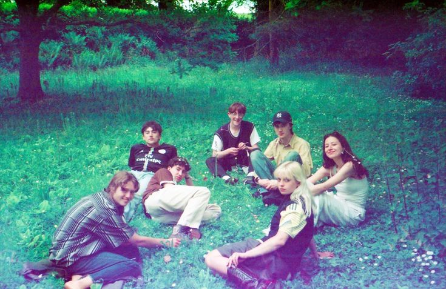
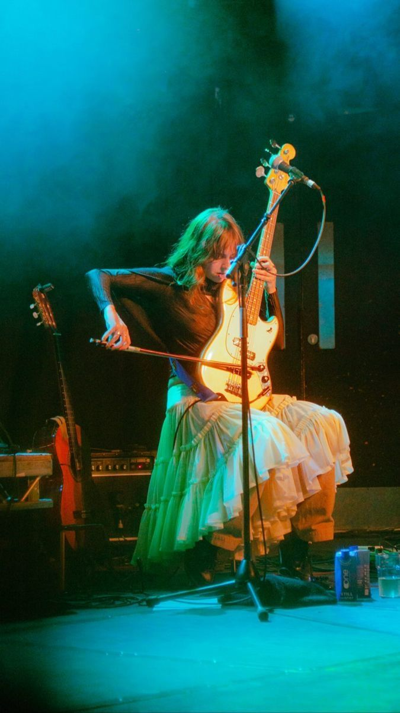

es una banda única, empezando por el hecho de que en su formación de rock agregaron un violin y un saxofón, por lo que tienen un sonido muy distintivo
inspirados por la música clásica, el rock progresivo y el jazz, han sacado 4 albumes desde 2021, los últimos 2 sin su anterior líder y vocalista isaac wood


estos son mis albumes y canciones favoritas de ellos